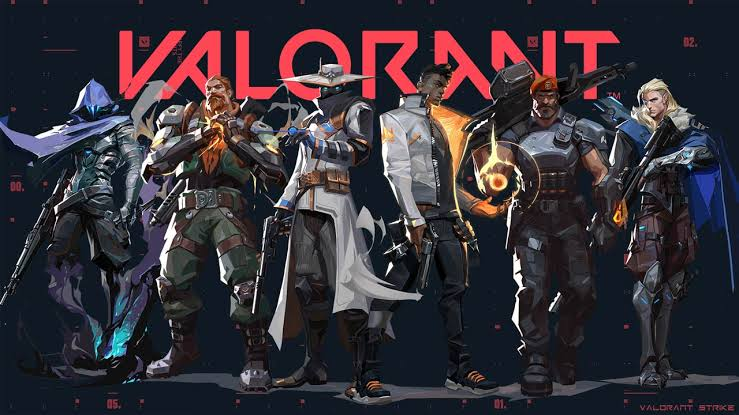
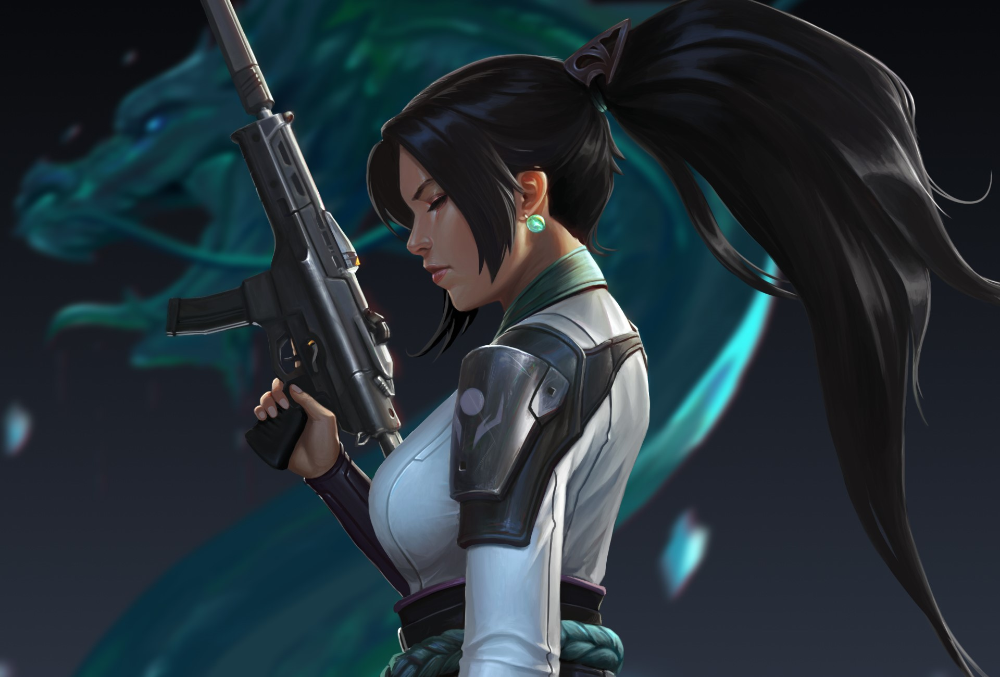

.jpg)
.jpg)

Valorant é um jogo eletrônico de tiro tático em primeira pessoa (FPS), desenvolvido e publicado de forma gratuita pela Riot Games. O jogo coloca duas equipes de cinco jogadores — Atacantes e Defensores — frente a frente em cenários competitivos, onde o objetivo principal é plantar ou desarmar um dispositivo explosivo chamado Spike. A partida dura até 25 rodadas, e a primeira equipe a vencer 13 delas consagra-se campeã, exigindo dos jogadores extrema precisão no tiro, boa coordenação em equipe e domínio de posicionamento estratégico.
O grande diferencial do jogo está em seu elenco de personagens, conhecidos como Agentes, que vêm de diversas culturas do mundo e possuem habilidades únicas além do armamento padrão. Essas funções são divididas entre Duelistas, Iniciadores, Controladores e Sentinelas, permitindo criar estratégias complexas de avanço, bloqueio de visão e suporte. Disponível originalmente para PC e portado recentemente para consoles modernos como PlayStation 5 e Xbox Series X/S, o ecossistema une mecânicas consagradas de tiro tático com um forte apelo ao cenário de esportes eletrônicos global.

.jpg)
bloqueia a visão com fumaças mesmo após ser eliminada e pode ressuscitar com sua ultimate

focado em precisão com sua pistola pesada e um rifle de precisão letal na ultimate

que domina confrontos individuais ao curar sua própria vida ou ficar intangível após abater inimigos
.jpg)
a mais popular do cenário competitivo devido à sua alta mobilidade com impulsos rápidos, saltos verticais e adagas mortais;

a suporte clássica que garante a sustentação do time curando aliados, criando barreiras de gelo e ressuscitando companheiros abatidos.